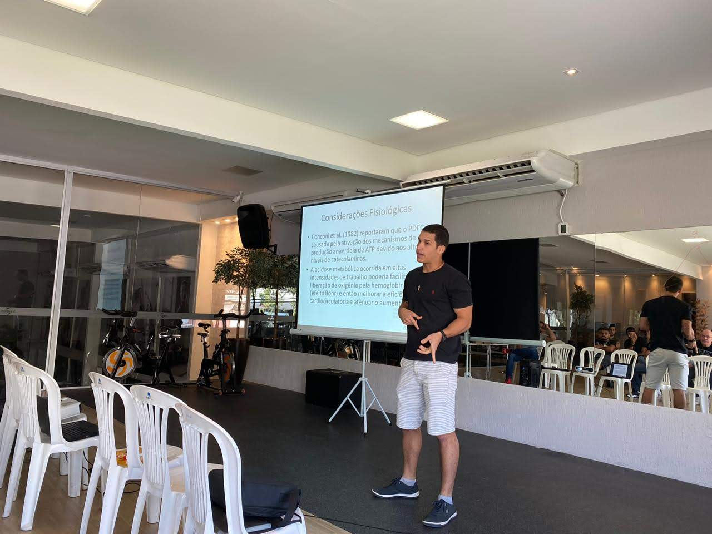
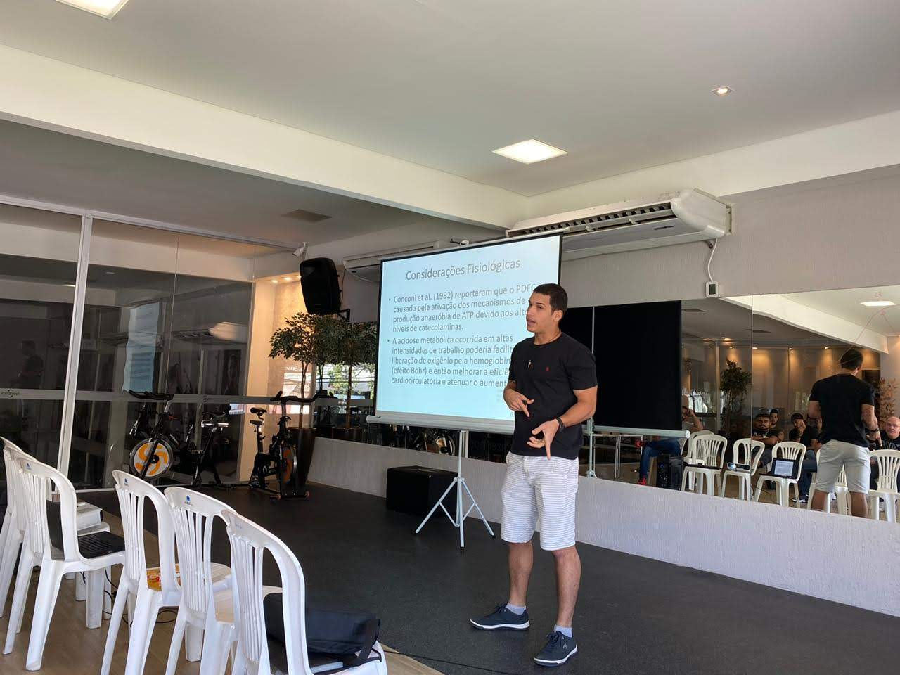

Muito além de calorias
Método Sem Achismo Nutrição e Treino Baseados em Ciência
Desenvolvido por Gustavo Carvalho, Especialista em Fisiologia do Exercício, Nutrição Esportiva e Biomecânica, Mestrando em Fisiologia na UFMG. Com mais de 10 anos de experiência e mais de 400 pessoas atendidas.

Treinador Gustavo
Personal & Nutri
 
